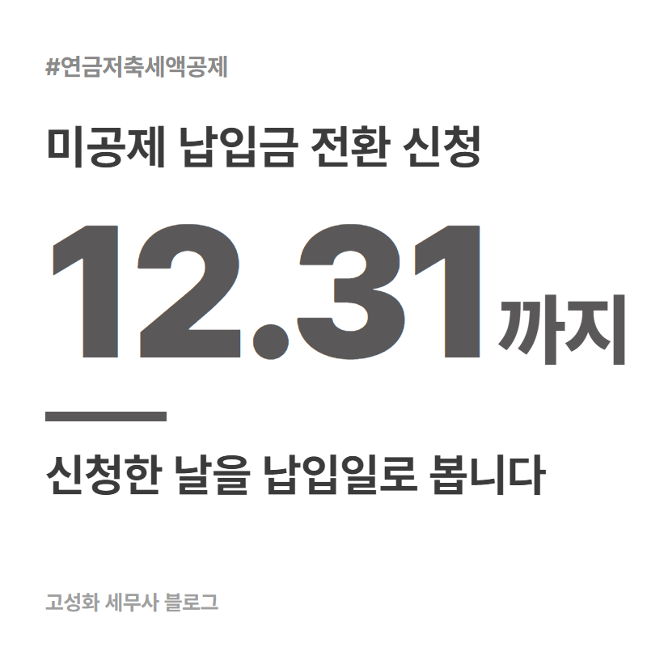
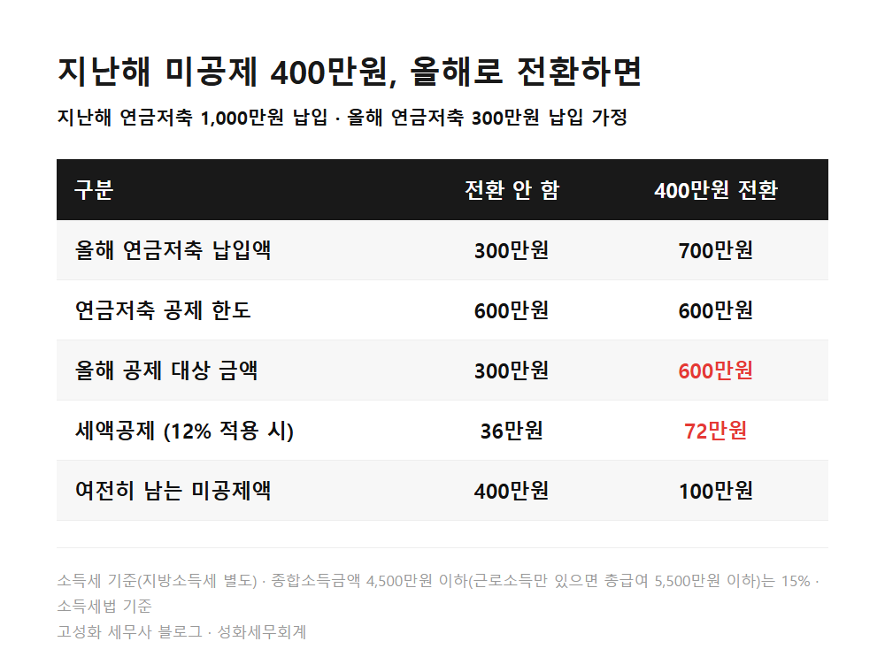
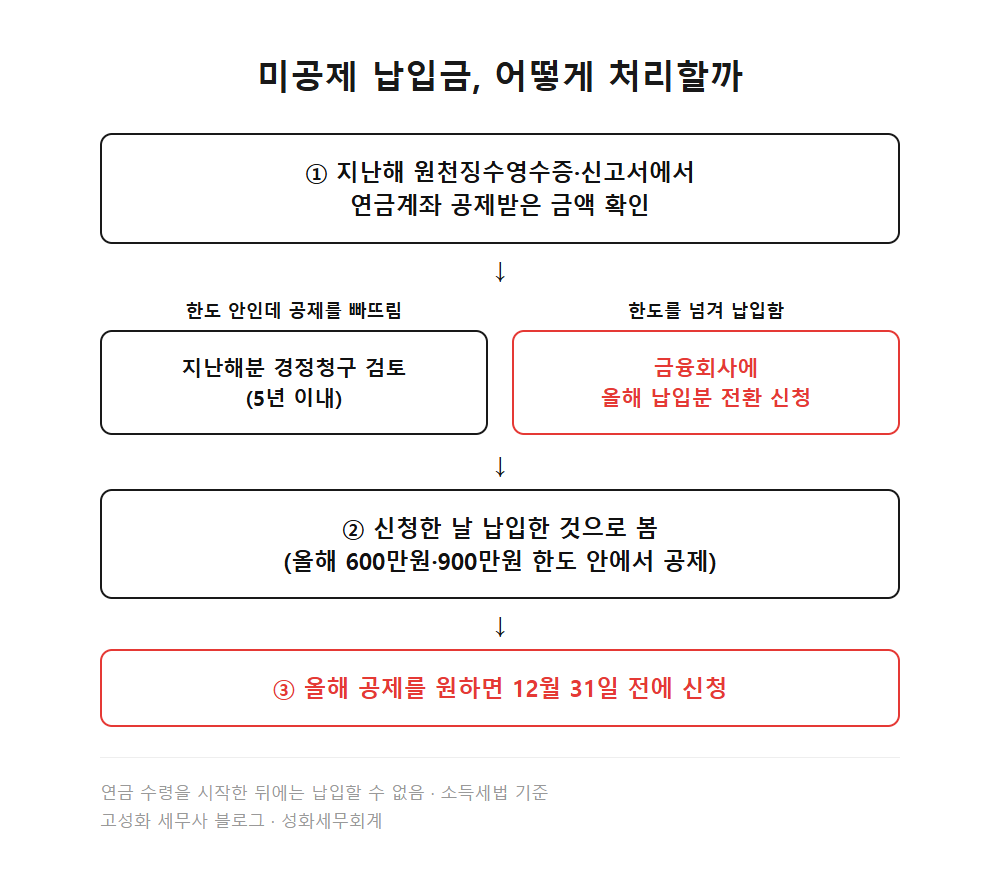
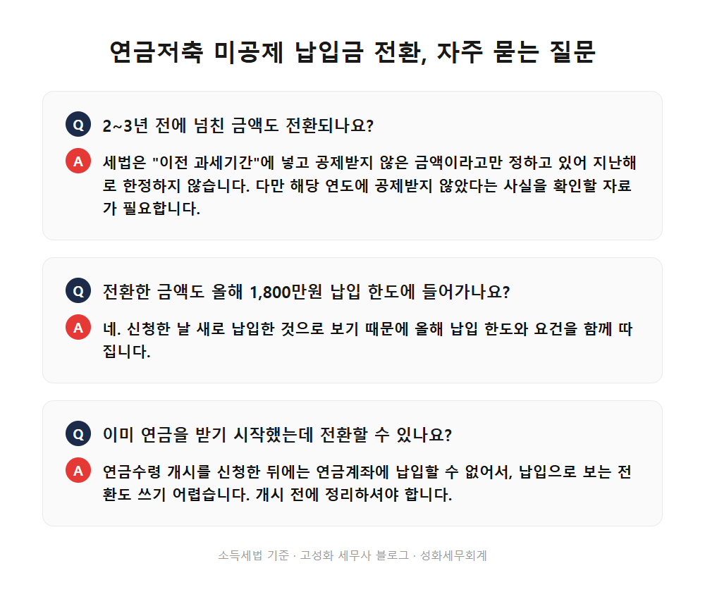

연금저축 한도 초과 납입금 전환 신청, 올해 안에 해야 합니다

400만원. 지난해 연금저축에 1,000만원을 넣으셨다면 세액공제에서 빠진 금액입니다. 이 돈은 가입한 금융회사에 "올해 납입한 것으로 바꿔달라"고 신청하면 올해 세액공제를 받을 수 있습니다. 세법은 신청한 날을 납입일로 보기 때문에, 2026년 공제로 쓰려면 12월 31일 전에 신청을 끝내야 합니다.
이 내용이 필요한 분은 대개 셋 중 하나입니다. 목돈이 생긴 해에 연금저축에 한도보다 많이 넣으셨거나, 퇴직 즈음 IRP와 연금저축에 몰아서 넣으셨거나, 연말정산 때 연금계좌 공제를 아예 빠뜨리신 경우입니다.
- 연금저축 한도 초과 납입금은 사라지지 않습니다
- 전환 신청 시점과 올해 한도를 같이 보셔야 합니다
- 공제를 빠뜨린 해라면 경정청구가 먼저입니다
한눈에 보기




자주 묻는 질문
2~3년 전에 넘친 금액도 전환되나요?
세법은 "이전 과세기간"에 넣고 공제받지 않은 금액이라고만 정하고 있어 지난해로 한정하지 않습니다. 다만 그 해에 공제받지 않았다는 사실을 확인할 자료가 필요합니다.
전환한 금액도 올해 1,800만원 납입 한도에 들어가나요?
네. 신청한 날 새로 납입한 것으로 보기 때문에 올해 납입 한도와 요건을 함께 따집니다.
이미 연금을 받기 시작했는데 전환할 수 있나요?
연금수령 개시를 신청한 뒤에는 연금계좌에 납입할 수 없어서, 납입으로 보는 전환도 쓰기 어렵습니다. 개시 전에 정리하셔야 합니다.
정리하면
연금저축 한도 초과 납입금은 금융회사에 전환 신청을 하면 올해 세액공제로 다시 쓸 수 있습니다. 신청한 날이 납입일이 되므로 올해 공제를 원하면 12월 31일 전에 신청해야 하고, 올해 한도가 이미 차 있다면 내년으로 미루는 게 낫습니다.
내 경우에 지금 전환할지, 경정청구를 할지, 내년으로 미룰지는 올해 납입액과 소득, 지난 몇 해의 공제 내역을 함께 놓고 봐야 정해집니다. 연말이 가까워지기 전에 한 번 맞춰보고 싶으시면 편하게 문의 주세요.
본문 전체와 근거 조문은 블로그에서 확인하실 수 있습니다.